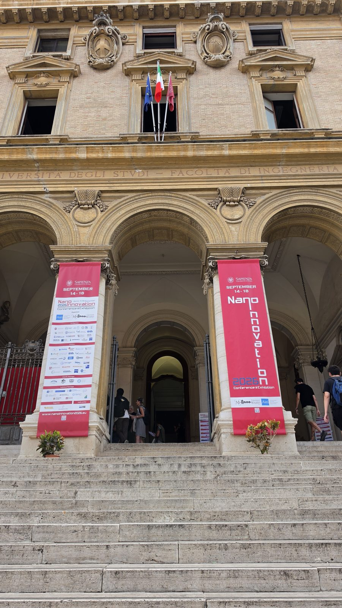
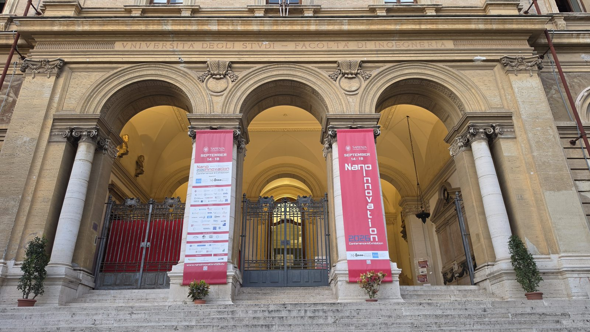
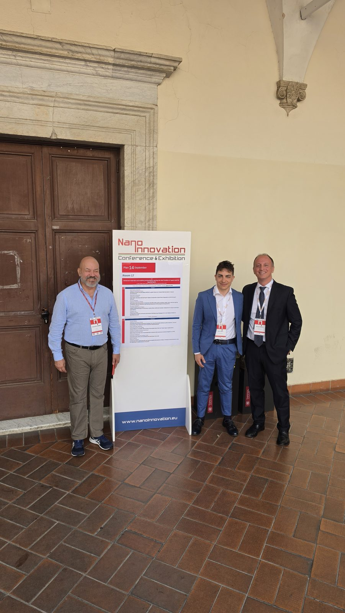
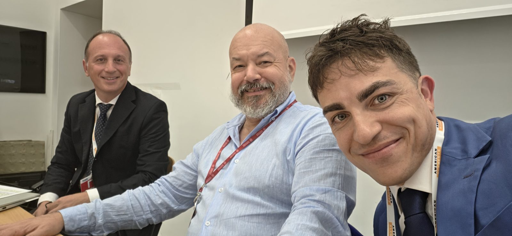
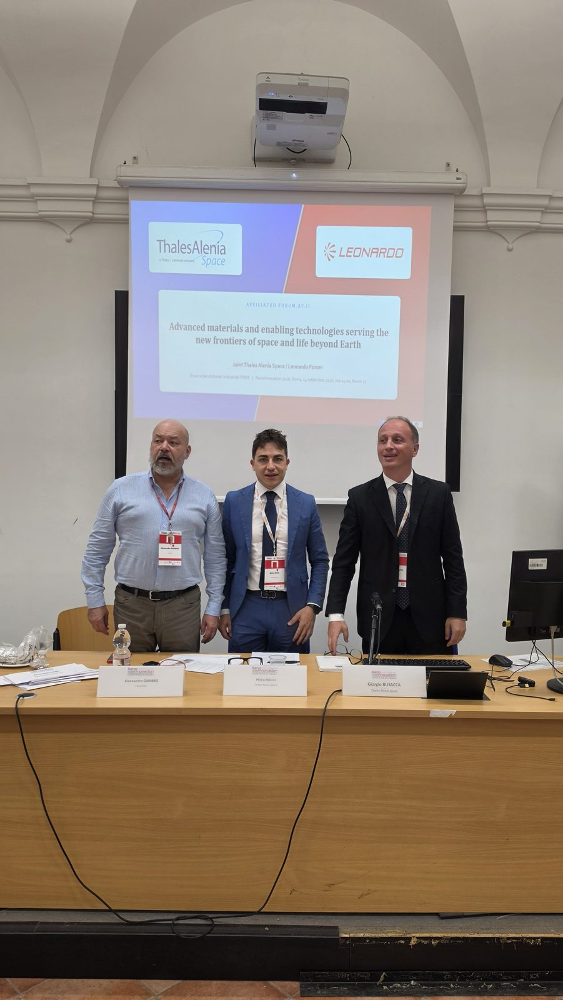
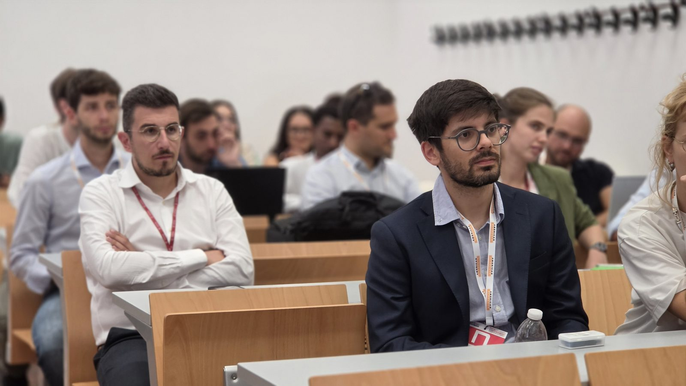
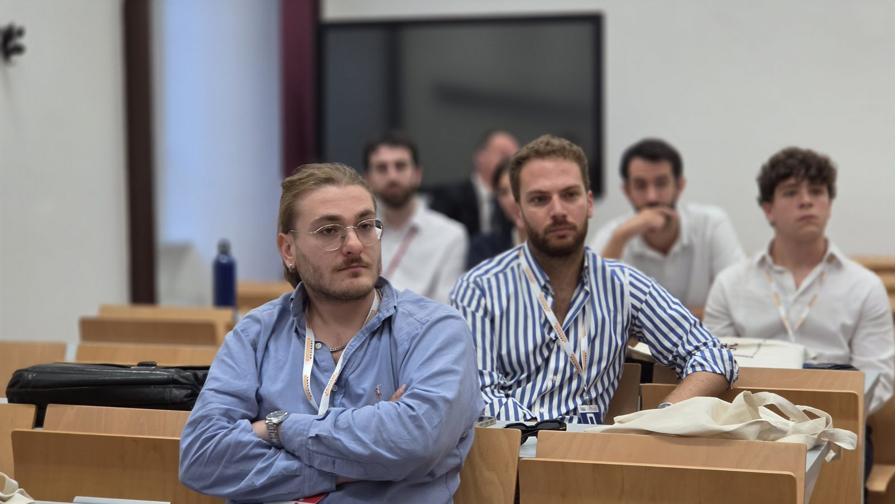
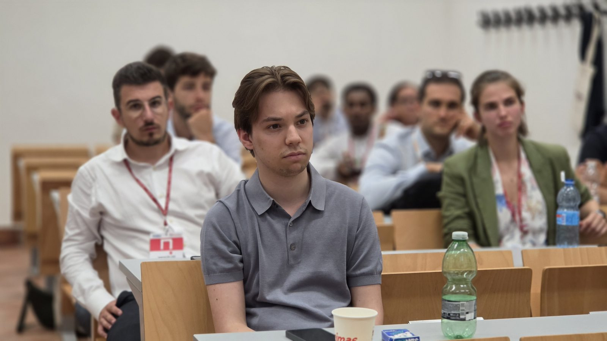

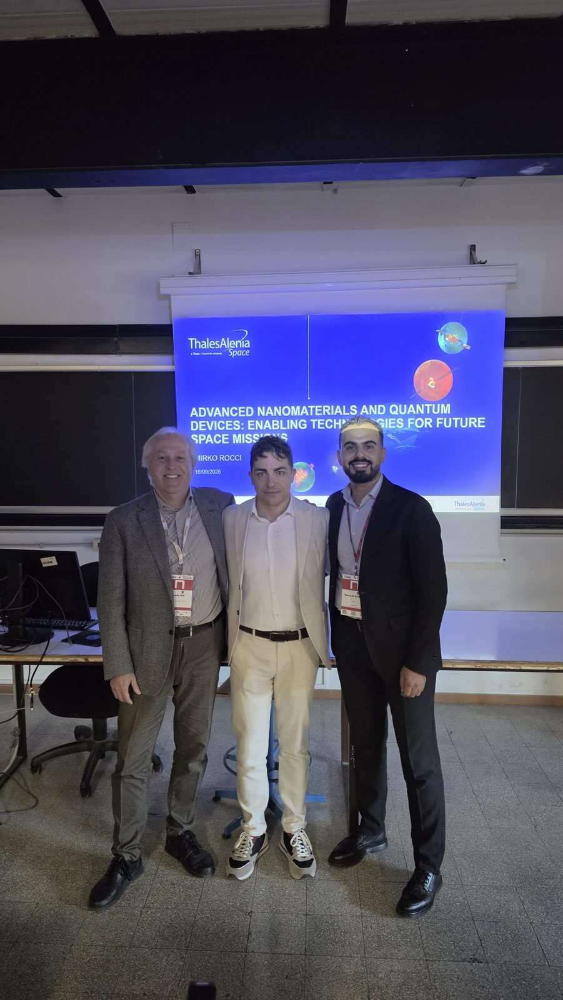
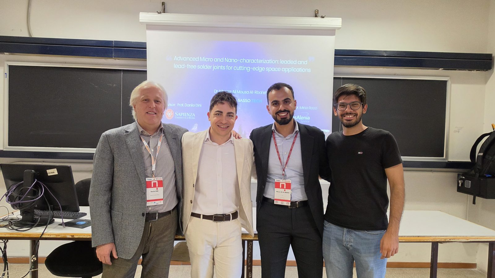
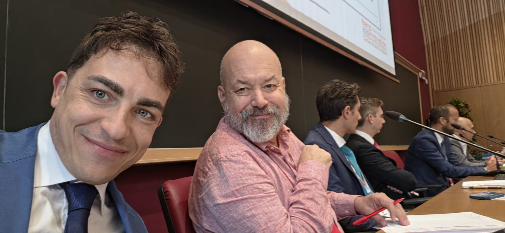
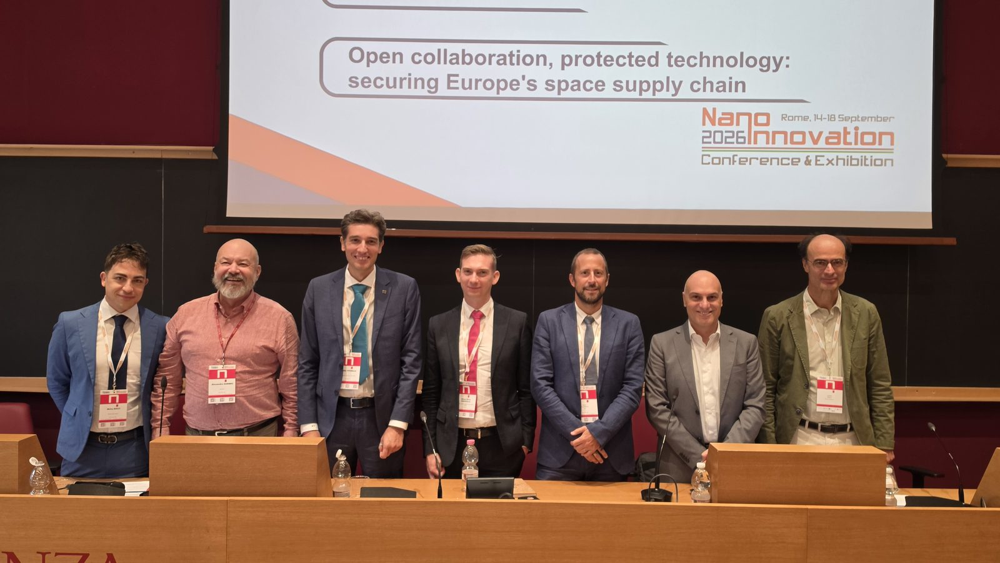
NanoInnovation 2026 · Roma
NanoInnovation è l'appuntamento che ogni anno fa incontrare ricerca e industria sulle nanotecnologie. Quest'anno sono stato a Roma per tutta la settimana, con due inviti arrivati da persone diverse e alcuni momenti che valeva la pena raccogliere in un posto solo. Qui sotto trovate le foto, con una didascalia per ciascuna.












Lunedì 14 settembre, nella Room 17, si è tenuto il forum affiliato congiunto tra Thales Alenia Space e Leonardo, dedicato ai materiali avanzati e alle tecnologie abilitanti per le nuove frontiere dello spazio e della vita oltre la Terra. Al tavolo con me c'erano Alessandro Garibbo per Leonardo e Giorgio Busacca per Thales Alenia Space. Gran parte della giornata è ruotata attorno al lavoro dei dottorati industriali, quindi attorno a ricerca che nasce già con un piede nell'industria.
Il primo è arrivato dal prof. Danilo Dini, che mi ha chiesto di aprire come keynote speaker la sessione YoungInnovation Space Missions and Nanotech, dedicata ai giovani ricercatori. Ho parlato dell'ambiente spaziale e delle sue difficoltà, dalle temperature estreme alle radiazioni al vuoto, e di come le nanotecnologie aiutino ad affrontarle. Ho raccontato anche una parte del lavoro che facciamo in Thales Alenia Space sui nanomateriali avanzati e sui dispositivi quantistici per le missioni future.
Il secondo è arrivato da Daniele Mirabile Gattia, che mi ha invitato il venerdì alla sessione organizzata dall'ENEA sui materiali di frontiera per le applicazioni energetiche. Lì ho presentato i nostri risultati sui compositi polimerici con filler 2D per la gestione termica nei sistemi spaziali.
NanoInnovation negli anni è diventata un punto di riferimento per l'innovazione in Italia, e ricevere due inviti nella stessa edizione significa parecchio per me. Il ringraziamento più sincero va a Danilo e a Daniele, e a chi organizza un evento che ogni anno rimette ricerca e industria nella stessa stanza. La parte più bella resta l'incontro con tanti giovani ricercatori e le conversazioni sul loro lavoro.